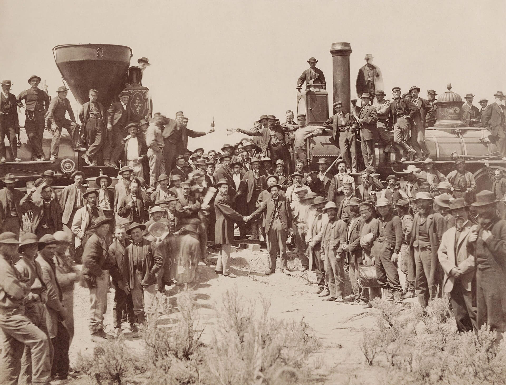
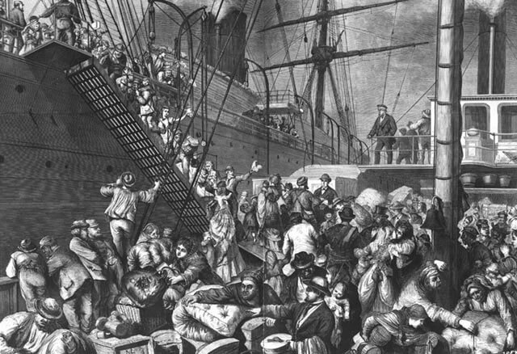
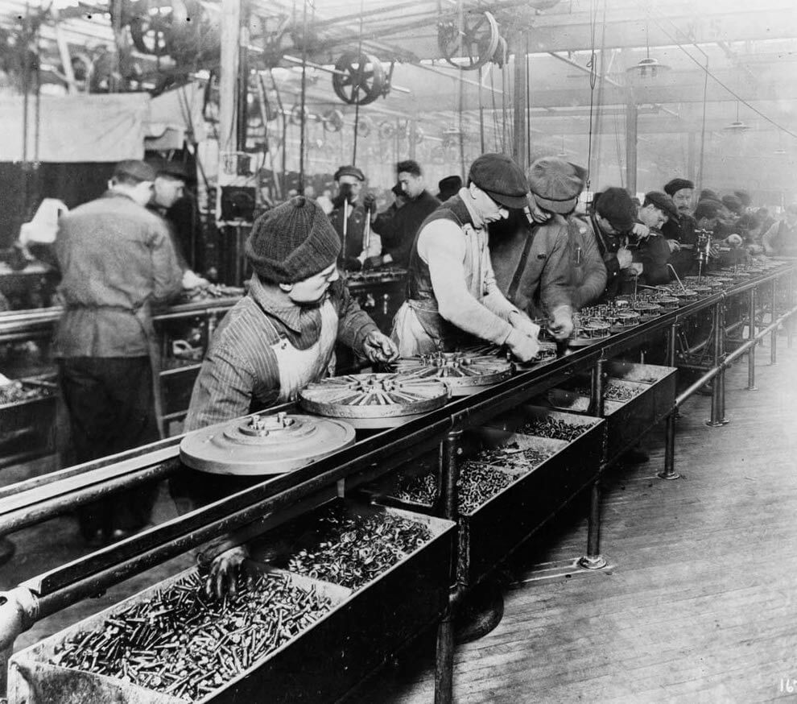

<div class="h-100 bg-green d-flex justify-content-center">
    <div class="all-width screen-size container-for-scroll">
        <div class="position-relative w-100 mx-auto h-100  p-0 d-flex flex-column justify-content-between">
            <div class="page-14">
                <div class="d-flex align-items-center user mt-5">
                    <h2 class="culper-ring__texts__title m-0 bg-black tree-title text-green d-flex flex-wrap">
                        <span class="border-bottom-line d-inline-block position-relative mig border-bottom-line-orange">Hog</span>
                        &nbsp;
                        <span class="blue-after-line d-inline-block position-relative border-bottom-line-orange">Butcher </span>
                        &nbsp;
                        <span class="blue-after-line d-inline-block position-relative border-bottom-line-orange">of</span>
                        &nbsp;
                        <span class="blue-after-line d-inline-block position-relative mig border-bottom-line-orange">the</span>
                        &nbsp;
                        <span class="blue-after-line d-inline-block position-relative mig border-bottom-line-orange">World</span>
                    </h2>
                    <button id="page_63_audio_play" type="button"
                            class="border-0 bg-transparent user__img overflow-hidden flex-shrink-0"
                            data-toggle="tooltip" data-placement="bottom"
                            title="Click the professor to hear his commentary on the period">
                        
                    </button>
                    <audio muted autoplay>
                        <source src="assets/img/thomosaBrown/video-audio/chicago.mp3" type="audio/mpeg">
                    </audio>
                </div>
                <p>
                    The landscape of America was in rapid flux in the late years of the nineteenth
                    century. For as much as these changes added convenience and greater promise to those
                    who had immigrated to the country in search of the American dream, this era of
                    transition also revealed the seedy underbelly of humanity, where greed and
                    aspiration outweighed human decency.
                </p>
                <p class="culper-ring__texts__subDesc text-decoration-none mb-0">
                    The wheel of cultural, economic, and industrial change rolled its way across the
                    American landscape and, as in the case of Thomas Brown, the growing metropolis of
                    Chicago.
                </p>
            </div>
            <div class="page-63-container position-relative">
                
                <div class="d-flex justify-content-end position-absolute page-63-container-first">
                    <div class="d-flex align-items-center p-0 ml-auto mb-0">
                        <div class="dropdown show d-flex align-items-center">
                            <a
                                    class="rounded-circle tree-of-liberty__btn text-white border-0 d-flex align-items-center justify-content-center bg-white dropdown-toggle"
                                    href="#"
                                    role="button"
                                    id="industrialization "
                                    data-toggle="dropdown"
                                    aria-haspopup="true"
                                    aria-expanded="false">
                            </a>
                            <div class="p-0 info position-relative transitionX-30">
                                <h3 class="m-0">Industrialization</h3>
                            </div>
                            <div
                                    class="dropdown-menu author"
                                    aria-labelledby="industrialization">
                                <button class="btn bg-transparent border-0 shadow-none position-absolute close-sticky-modal p-0"
                                        type="button">
                                    <svg width="25" height="25" viewBox="0 0 60 60" fill="none" xmlns="http://www.w3.org/2000/svg">
                                        <path d="M33.3147 30.0001L59.3135 4.00115C60.2288 3.0858 60.2288 1.60174 59.3135 0.686512C58.3981 -0.22872 56.9141 -0.228837 55.9988 0.686512L29.9999 26.6854L4.00115 0.686512C3.0858 -0.228837 1.60174 -0.228837 0.686512 0.686512C-0.22872 1.60186 -0.228837 3.08592 0.686512 4.00115L26.6853 29.9999L0.686512 55.9988C-0.228837 56.9142 -0.228837 58.3983 0.686512 59.3135C1.14413 59.7711 1.74401 59.9998 2.34389 59.9998C2.94377 59.9998 3.54353 59.7711 4.00127 59.3135L29.9999 33.3147L55.9987 59.3135C56.4563 59.7711 57.0562 59.9998 57.6561 59.9998C58.256 59.9998 58.8558 59.7711 59.3135 59.3135C60.2288 58.3981 60.2288 56.9141 59.3135 55.9988L33.3147 30.0001Z" fill="#282828"/>
                                    </svg>
                                </button>
                                <div class="w-100 h-100 popup-container">
                                    
                                    <div class="d-flex flex-wrap align-items-end px-3">
                                        <p class="my-3 text-center">
                                            <small>
                                                Driving of the Last Spike” photograph, Utah, 1869. Here
                                                railroad workers celebrate the driving of the last spike for
                                                the first transcontinental railroad, which officially opened
                                                up the span of the United States to the rapid features of
                                                train transport.
                                            </small>
                                        </p>
                                        <ul class="list-unstyled">
                                            <li class="mt-1">
                                                In the aftermath of the American Civil War (1861-1865), the
                                                United States entered a period of massive industrialization.
                                                The American landscape became peppered with new factories
                                                and mammoth facilities to support the booming industries
                                                such as steel manufacturing, petroleum refining, and
                                                electrical plants. Facilitating this boom was the concurrent
                                                expansion of railroad networks that criss-crossed the
                                                country to both carry goods and encourage trade between
                                                centers considered too distant in prior years.
                                            </li>
                                        </ul>
                                    </div>
                                </div>
                            </div>
                        </div>
                    </div>
                </div>
                <div class="d-flex justify-content-end position-absolute page-63-container-second">
                    <div class="d-flex align-items-center p-0 ml-auto mb-0">
                        <div class="dropdown show d-flex align-items-center">
                            <a
                                    class="rounded-circle tree-of-liberty__btn text-white border-0 d-flex align-items-center justify-content-center bg-white dropdown-toggle flex-shrink-0"
                                    href="#"
                                    role="button"
                                    id="massProduction "
                                    data-toggle="dropdown"
                                    aria-haspopup="true"
                                    aria-expanded="false">
                            </a>
                            <div class="p-0 info position-relative transitionX-30">
                                <h3 class="m-0">Mass Production</h3>
                            </div>
                            <div
                                    class="dropdown-menu author"
                                    aria-labelledby="massProduction">
                                <button class="btn bg-transparent border-0 shadow-none position-absolute close-sticky-modal p-0"
                                        type="button">
                                    <svg width="25" height="25" viewBox="0 0 60 60" fill="none" xmlns="http://www.w3.org/2000/svg">
                                        <path d="M33.3147 30.0001L59.3135 4.00115C60.2288 3.0858 60.2288 1.60174 59.3135 0.686512C58.3981 -0.22872 56.9141 -0.228837 55.9988 0.686512L29.9999 26.6854L4.00115 0.686512C3.0858 -0.228837 1.60174 -0.228837 0.686512 0.686512C-0.22872 1.60186 -0.228837 3.08592 0.686512 4.00115L26.6853 29.9999L0.686512 55.9988C-0.228837 56.9142 -0.228837 58.3983 0.686512 59.3135C1.14413 59.7711 1.74401 59.9998 2.34389 59.9998C2.94377 59.9998 3.54353 59.7711 4.00127 59.3135L29.9999 33.3147L55.9987 59.3135C56.4563 59.7711 57.0562 59.9998 57.6561 59.9998C58.256 59.9998 58.8558 59.7711 59.3135 59.3135C60.2288 58.3981 60.2288 56.9141 59.3135 55.9988L33.3147 30.0001Z" fill="#282828"/>
                                    </svg>
                                </button>
                                <div class="w-100 h-100 popup-container">
                                    
                                    <div class="d-flex flex-wrap align-items-end px-3">
                                        <p class="my-3 text-center">
                                            <small>
                                                Ford Assembly Line (1913). Henry T. Ford changed the face of
                                                modern manufacturing with his assembly line production.
                                                Here, workers assess hub caps as the travel en masse down a
                                                conveyor belt.
                                            </small>
                                        </p>
                                        <ul class="list-unstyled">
                                            <li class="mt-1">
                                                Another key facet to industrial success during this era was
                                                the mass production of goods. Though the first factory
                                                assembly line as we know it would not come into being until
                                                Ford’s Model T automated assembly line in 1913, prior to
                                                this point factories were scaled to produce record volumes
                                                of goods (and thereby turn business owners into titans of
                                                their field). Andrew Carnegie, for example, pioneered what
                                                would become known as the “Bessemer process” for the mass
                                                production of steel and thereafter became an incredibly
                                                wealthy figure in the industry. Very often though, this push
                                                for greater scale resulted in more perilous working
                                                conditions and, in the case of places like the Chicago Union
                                                Stockyards, inhumane treatment of livestock.
                                            </li>
                                        </ul>
                                    </div>
                                </div>
                            </div>
                        </div>
                    </div>
                </div>
                <div class="d-flex justify-content-end position-absolute page-63-container-third">
                    <div class="d-flex align-items-center p-0 ml-auto mb-0">
                        <div class="dropdown show d-flex align-items-center">
                            <div class="p-0 info position-relative">
                                <h3 class="m-0">Migration</h3>
                            </div>
                            <a
                                    class="rounded-circle tree-of-liberty__btn text-white border-0 d-flex align-items-center justify-content-center bg-white dropdown-toggle"
                                    href="#"
                                    role="button"
                                    id="migration"
                                    data-toggle="dropdown"
                                    aria-haspopup="true"
                                    aria-expanded="false">
                            </a>
                            <div
                                    class="dropdown-menu author"
                                    aria-labelledby="migration">
                                <button class="btn bg-transparent border-0 shadow-none position-absolute close-sticky-modal p-0"
                                        type="button">
                                    <svg width="25" height="25" viewBox="0 0 60 60" fill="none" xmlns="http://www.w3.org/2000/svg">
                                        <path d="M33.3147 30.0001L59.3135 4.00115C60.2288 3.0858 60.2288 1.60174 59.3135 0.686512C58.3981 -0.22872 56.9141 -0.228837 55.9988 0.686512L29.9999 26.6854L4.00115 0.686512C3.0858 -0.228837 1.60174 -0.228837 0.686512 0.686512C-0.22872 1.60186 -0.228837 3.08592 0.686512 4.00115L26.6853 29.9999L0.686512 55.9988C-0.228837 56.9142 -0.228837 58.3983 0.686512 59.3135C1.14413 59.7711 1.74401 59.9998 2.34389 59.9998C2.94377 59.9998 3.54353 59.7711 4.00127 59.3135L29.9999 33.3147L55.9987 59.3135C56.4563 59.7711 57.0562 59.9998 57.6561 59.9998C58.256 59.9998 58.8558 59.7711 59.3135 59.3135C60.2288 58.3981 60.2288 56.9141 59.3135 55.9988L33.3147 30.0001Z" fill="#282828"/>
                                    </svg>
                                </button>
                                <div class="w-100 h-100 popup-container">
                                    
                                    <div class="d-flex flex-wrap align-items-end px-3">
                                        <p class="my-3 text-center">
                                            <small>
                                                German Immigrants Boarding a Ship for America” - Library of
                                                Congress
                                            </small>
                                        </p>
                                        <ul class="list-unstyled">
                                            <li class="d-flex align-items-start">
                                                The impact on the city centers, like Chicago, of this
                                                industrialization was an exponential growth. As shared by
                                                the Encyclopedia of Chicago History: “The 1880 manufacturing
                                                census, for example, counted 171 carpentering establishments
                                                employing 1,792 employees. By 1890, the same census
                                                enumerated 500 establishments with 6,223 employees. New
                                                technologies generated new jobs, as the city's
                                                infrastructure simultaneously enhanced growth while
                                                expanding in response to development. In 1880, 358 employees
                                                worked for 86 Chicago plumbing and gas fitting firms. As
                                                running water, sewer connections, and gas for lighting and
                                                cooking become more common in both residential and business
                                                buildings in the 1880s, those figures jumped to 2,586
                                                employees at 278 firms.
                                            </li>
                                            <li class="mt-3">
                                                ”​Much of this growth in population
                                                was owed to the migration of substantial parts of the
                                                population to these city centers in the hope of finding new
                                                jobs and better lives. A large number of these migrants were
                                                recent immigrants to the United States who had left lands
                                                elsewhere around the world in hope of following the
                                                “American Dream.
                                            </li>
                                        </ul>
                                    </div>
                                </div>
                            </div>
                        </div>
                    </div>
                </div>
                <div class="page-number from-bottom position-absolute text-center b-0 w-100">63</div>
            </div>
        </div>
    </div>
</div>
